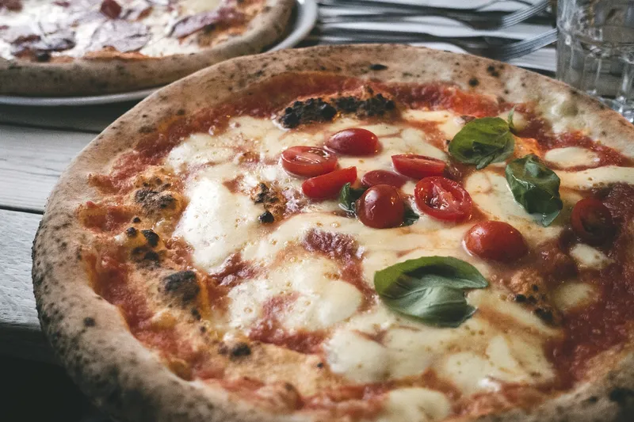
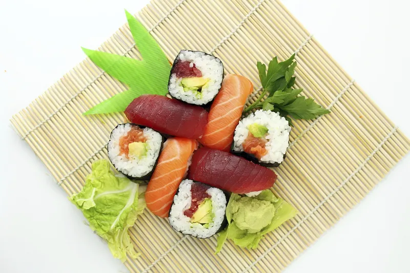
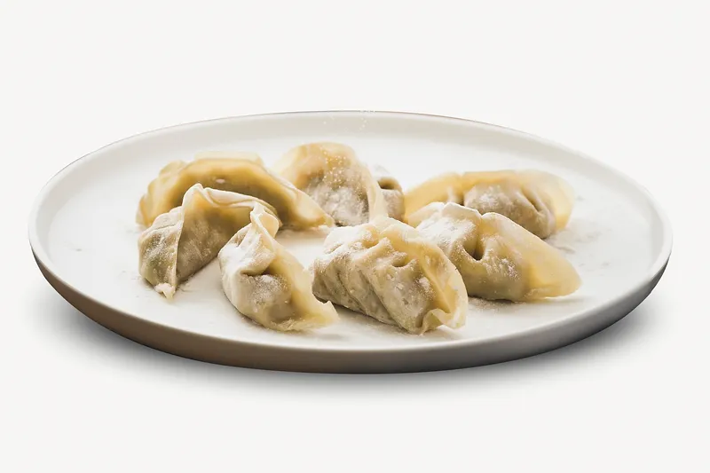
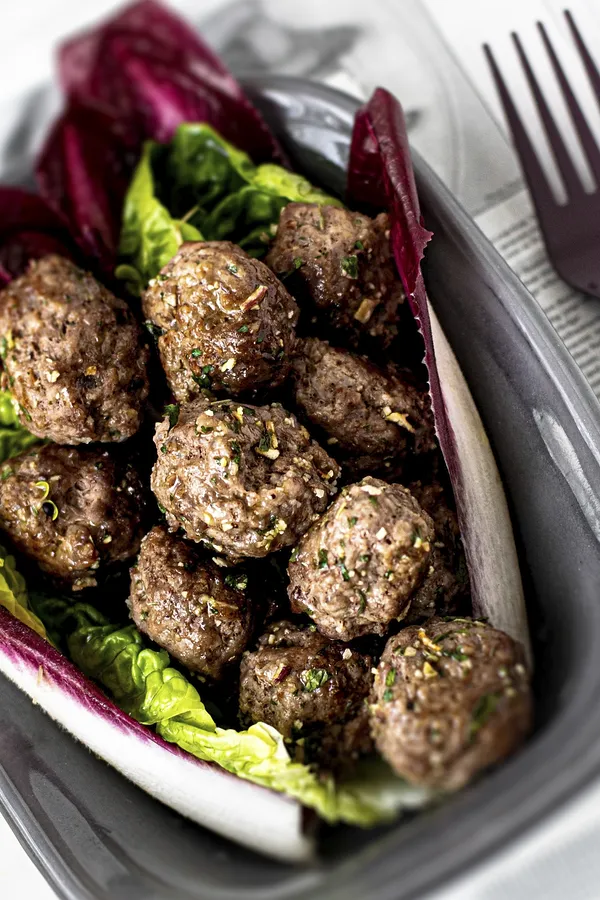

Italian
Pizza
Do you want to learn how to cook a real Italian pizza? Here we go through step by step so that you can cook a really good Italian pizza. Before the course begins, you will receive a shopping list with the ingredients you need to succeed with your Italian pizza.
Pasta
Do you want to learn how to cook a real Italian pasta? Here we go through step by step so that you can cook a really good Italian pasta. Before the course begins, you will receive a shopping list with the ingredients you need to succeed with your Italian pasta.
1h 1 occasion 700kr

Asian
Sushi
Do you want to learn how to cook real sushi? Here we go through step by step so that you can prepare a really good sushi. Before the course begins, you will receive a shopping list with the ingredients you need to succeed with your sushi.
dumplings
Do you want to learn how to cook a real dumplings? Here we go through step by step so that you can cook a really good dumplings. Before the course begins, you will receive a shopping list with the raw materials you need to succeed with your dumplings.
1h 1 occasion 700kr
Swedish
Meatballs with boiled potatoes and cream sauce
Do you want to learn how to cook meatballs with boiled potatoes and cream sauce? Here we go through step by step so that you can cook a really good meatballs with boiled potatoes and cream sauce. Before the course begins, you will receive a shopping list with the ingredients you need to succeed with your meatballs with boiled potatoes and cream sauce.
Oven-baked sausage with mashed potatoes
Do you want to learn how to cook Oven-baked sausage with mashed potatoes? Here we go through step by step so that you can cook a really good Oven-baked sausage with mashed potatoes. Before the course begins, you will receive a shopping list with the ingredients you need to succeed with your Oven-baked sausage with mashed potatoes.